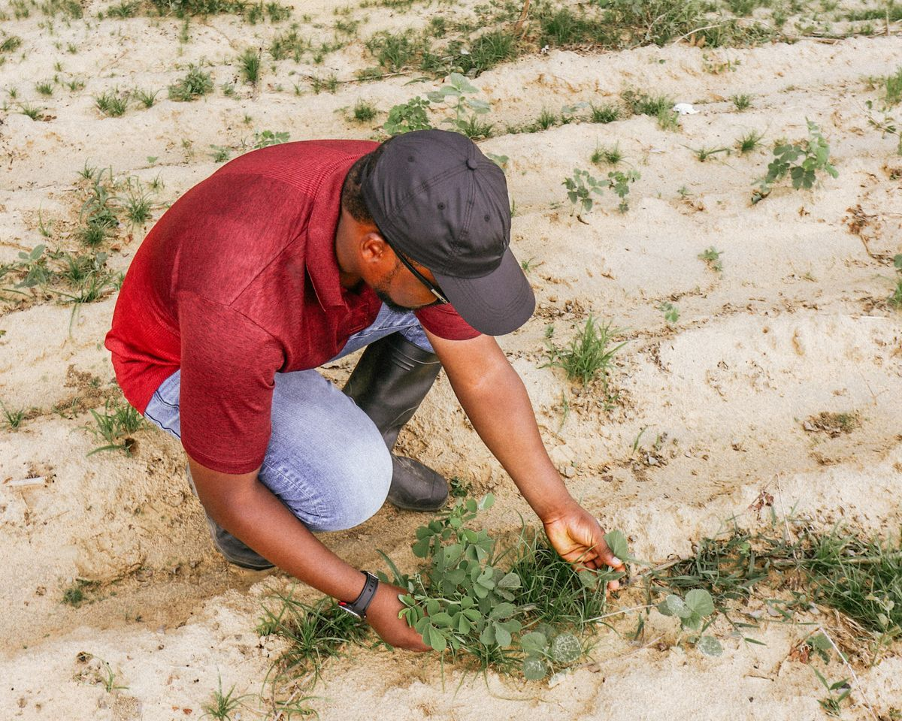

How We Get the Numbers Right:
Reliable Facts You Can Trust.
When you make multi-million-dollar decisions, you cannot rely on rumors, unverified web searches, or straight-line guesses. At Renalytica, every figure we publish is built on a dual foundation of primary field surveys and verified secondary resources, passing through a strict 4-step verification protocol to ensure it is accurate, grounded in reality, and completely trustworthy.
No Fluff. No Guesswork. Just Real Facts.
A lot of market research published today is built on recycled web articles, surface-level online surveys, or simple straight-line guesses. That kind of research fills up pages, but collapses when real-world challenges—like currency volatility, fuel price spikes, or supply chain bottlenecks—impact your business.
The Flaws of Superficial Scraping
Relying on unchecked internet sources, isolated surveys with microscopic sample sizes, or academic models disconnected from commercial operational realities.
- Recycled Desk Research: Secondary data repeated across outdated blogs without verifying original methodology or sample sizes.
- Single-Point Surveys: Unweighted surveys that suffer from respondent self-reporting bias and lack real physical corroboration.
- Currency Blindness: Treating nominal figures as real growth without separating currency devaluation from actual unit volume demand.
- Black-Box Algorithms: Mathematical models that cannot be audited by institutional risk officers or investment committees.
Dual-Vector Ground-Truth Triangulation
We eliminate guesswork by combining on-the-ground primary field surveys with audited secondary institutional resources—reconciling both to uncover real market movements.
- Ground-Truth Primary Surveys: Real price and volume data collected weekly across wholesale markets, distribution hubs, and agricultural cooperatives.
- Audited Secondary Repositories: Ingestion of official statistics from Central Banks, Ministries, IMF, World Bank, and listed company filings.
- Dual-Currency Normalization: Tracking historical and forecast trends in both local currency and US Dollars with parallel exchange adjustments.
- Transparent Mathematical Auditing: Every forecast provides base, conservative, and upside scenarios backed by open data citations.
Two Independent Tracks. One Unified Ground Truth.
No economic model is stronger than its inputs. We do not choose between on-the-ground surveys and institutional records—we harness both simultaneously to give you the most accurate picture possible.
On-the-Ground Telemetry & Direct Surveys
Direct physical observation capturing fresh market velocity before official government bodies or commercial agencies even begin drafting reports.

Wholesale & Merchant Price Surveys
Trained enumerators record real transaction prices, stock levels, and distributor margins across 180+ commercial hubs weekly.
Port Manifests & Bill-of-Lading Registers
Audited customs records tracking exact physical tonnage entering and exiting key seaports, borders, and bonded terminals.
Satellite Vegetation (NDVI) & Weather Scans
Remote sensing telemetry monitoring soil moisture and biomass health from space to independently verify crop yield estimates.
Direct Industry Executive Inquiries
Structured qualitative and quantitative interviews with manufacturing leads, freight haulers, and trade association executives.
Audited Secondary Resources & Repositories
Systematic harvesting and harmonization of official records, regulatory filings, and vetted multilateral databases across regional economies.
Central Banks & Statistics Bureaus
Direct ingestion of monetary policy releases, foreign exchange reserves, trade balance ledgers, and National Bureaus of Statistics indices.
Multilateral Economic Databases
Structured time-series datasets from the International Monetary Fund (IMF), World Bank, African Development Bank (AfDB), and FAO.
Corporate Annual Disclosures & Filings
Audited financial statements and stock exchange disclosures from major listed FMCG, agribusiness, energy, and financial corporations.
Specialized Commodity & Industry Archives
Historical spot pricing archives, trade federation bulletins, academic econometric studies, and regulatory gazettes.
 PORT & MANIFEST AUDIT
PORT & MANIFEST AUDIT
The Cross-Vector Triangulation Advantage
Secondary resources provide essential macro structure and historical context; primary field surveys provide real-time reality checks. When triangulated, statistical discrepancies are immediately exposed. If a secondary government bulletin claims domestic grain harvests surged 35%, but our primary surveys reveal soaring spot market prices and port manifests show record grain imports, our research desk investigates until the empirical truth is uncovered.
From Raw Data to Boardroom Direction
Every table, forecast, and strategic recommendation follows our strict 4-step data verification pipeline. Click through the stages below to see our methodology in action.
Gathering Real Facts from Field & Secondary Repositories
We ingest raw quantitative and qualitative data across synchronized primary surveys and secondary institutional repositories.
Cleaning, Currency Normalization & Noise Filtering
Raw data is noisy and distorted by volatile exchange rates or reporting lags. Our economists apply strict econometric filters before any data touches a forecast.
Econometric Modeling & Multi-Scenario Stress-Testing
Markets are non-linear; single-point best-case guesses fail when real-world shocks hit. We stress-test all projections across dynamic scenarios.
Dual Senior Economist Review & Plain-English Translation
Mathematics must translate into actionable boardroom direction. Two senior econometricians independently verify every table before publication.
Inspect How We Score Data Confidence
Select a key sector to explore how primary survey data and secondary institutional resources are weighted, cross-checked, and calculated into an empirical confidence rating.
180+ weekly merchant price surveys across rural collection depots and major grain silos, verified via satellite NDVI scans.
Ministries of Agriculture crop assessments, FAO GIEWS seasonal registers, port fertilizer import manifests, and Central Bank agricultural loans.
Reconciling official production claims against live port import volumes and cross-border trucking manifests.
High Empirical Certainty
Multi-point triangulation active. Data vetted through dual-economist peer review and 10,000 Monte Carlo stochastic simulation iterations.
Sector-Specific Verification Protocols
Every industry has unique data dynamics. We adapt our primary survey design and secondary data gathering protocols to fit specific sector market mechanics.
Crop Yield & Input Deficit Modeling
Sovereign Liquidity & Inflation Transmission
Route-to-Market & Distributor Margin Telemetry
Seaport Ingestion & Manifest Verification
Our 100% Ethical Independence Guarantee
Real intelligence requires total objectivity. We enforce strict institutional governance rules to keep our loyalty 100% aligned with our report buyers.
Independent Research by Institutional Design
Unlike typical research houses funded by corporate sponsorships or PR retainers, Renalytica operates under an ironclad ethical charter. Our analysts do not hold active commercial positions in covered assets, and our findings are never shaped by sponsors, advertisers, or political lobbies.
Zero Paid Reviews
We never accept sponsorship money or PR retainers to promote companies or products. Our revenue comes solely from verified research subscriptions and report sales.
No Trading Conflicts
Our lead economists and analysts are legally barred from trading commodity futures, currencies, or equities in the specific industries and companies they cover.
Complete Attribution
Every table clearly documents its data sources—distinguishing between our on-the-ground survey samples and verified secondary institutional registers.
Ironclad Confidentiality
Custom feasibility studies and private corporate advisory engagements are guarded by institutional Non-Disclosure Agreements (NDAs) and bank-grade data security.
We Are Always Happy to Explain Our Numbers.
We welcome technical due diligence from institutional risk officers, chief economists, and boardroom investment committees. Review our full methodology whitepaper or schedule a direct briefing with our lead research team.